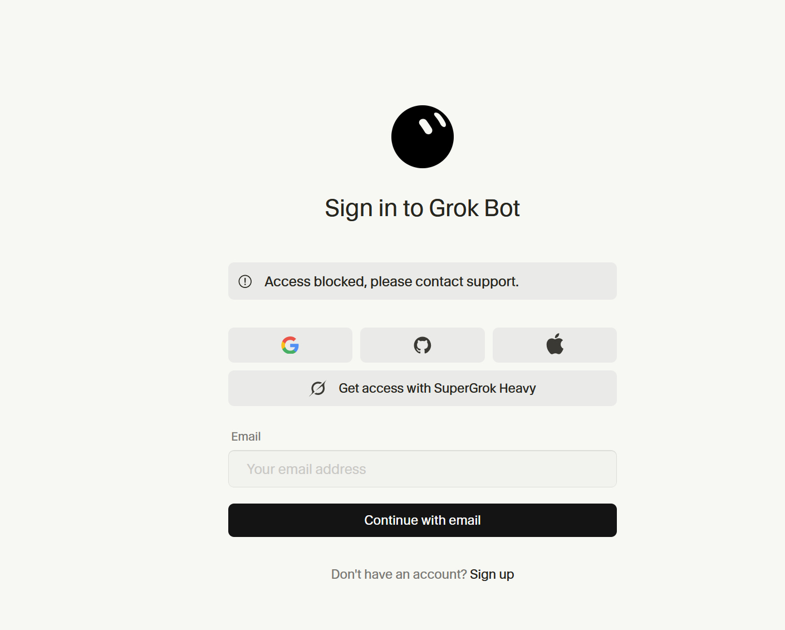

Original Cursor case opened; requested screenshots, plan/account context, network checks, and retries were supplied. The same denial reproduced.
Public evidence hub
Paid SuperGrok benefit blocked by policy_denied
X authorization succeeds, Cursor's Grok Bot callback rejects the session, and the required matching personal account cannot be completed. The customer is willing to use a new matching .ru account.
Unresolved · updated 2026-09-04 06:04 UTC
Paid plan
SuperGrok Heavy
Publicly listed by xAI as including Grok Bot.
Observed result
policy_denied
“Access blocked, please contact support.”
Press record
31 at 16 outlets
Distinct verified recipients; staged outreach continues toward 100.
The corrected issue
The customer does not insist on using a pre-existing Cursor account. A new personal Cursor account with the same .ru address as the paid X/SuperGrok identity is acceptable. Cursor says the emails must match and the link is permanent, yet the matching path remains blocked.
The evidence is consistent with an unpublished domain-level rule, but Cursor has not confirmed that inference. No public record here assigns a legal basis or motive.

Evidence package
Public incident brief
Core issue, routes advanced, current framing, and privacy boundary.
Reporter brief
Confirmed facts, open questions, news value, and private-verification offer.
Technical-owner action packet
Systems to inspect and the minimum useful vendor reply.
Reconciliation matrix
Observed states mapped to responsible systems and live resolution tests.
Evidence chain
The complete sequence with explicit proof limitations.
Public-source matrix
First-party, private authenticated, and public-discussion sources separated.
Public timeline
Dated support, retry, correction, public, and press actions.
Affected-user checklist
Privacy-safe evidence collection for comparable failures.
Vendor loop
| Actor | Recorded action |
|---|---|
| Cursor support | Requested diagnostics and retries, refreshed settings, stated emails must match and links are permanent, then forwarded the case without a backend finding or ETA. |
| xAI support | Routed the case back to Cursor because Cursor supports Grok Bot. |
| Cursor automation | Closed the transferred request as a duplicate of the original unresolved case. |
Public outreach record
31 distinct verified recipients at 16 outlets received individualized privacy-sanitized tips and live evidence links. The 21 recipients in the first two batches also received the full parity package from material commit 8a549b2. No immediate delivery failure was found at the checkpoint.
404 Media · 4Ars Technica · 1Axios · 1Bloomberg · 1Engadget · 3Fast Company · 1Forbes · 2Gizmodo · 1Rest of World · 1TechCrunch · 1Tech Policy Press · 1TechRadar · 1The Register · 5Tom's Hardware · 1VentureBeat · 1WIRED · 6
Open the public outreach record. Individual names, addresses, and private message identifiers are not published.
Escalation timeline
A reported backend-settings refresh did not fix the problem. Cursor stated the same-email and permanent-link requirements.
Cursor routed the case to its Grok Bot technical team; xAI later routed support back to Cursor; Cursor automation closed the transfer as duplicate. The customer corrected the target-account requirement.
Reddit, X, GitHub, GitHub Pages, and a staged press campaign were activated. Three controlled batches reached 31 recipients at 16 outlets.
What would count as a real fix
- A live, verified link from the paid X/xAI identity to a visibly confirmed matching personal Cursor account.
- A supported alternative that preserves the paid entitlement and avoids an irreversible link to the wrong account.
- If access is intentionally unavailable, a published restriction and an appropriate refund, service credit, or equivalent remedy.
“Forwarded,” “duplicate,” “please wait,” or “settings refreshed” does not resolve the incident.
Privacy boundary
This mirror excludes complete email addresses, the private support-ticket identifier, Gmail identifiers, OAuth session values, full private correspondence, payment data, IP/ISP or exact location, and journalist contact details. Confirmed observations are separated from inference.